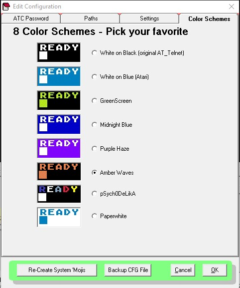
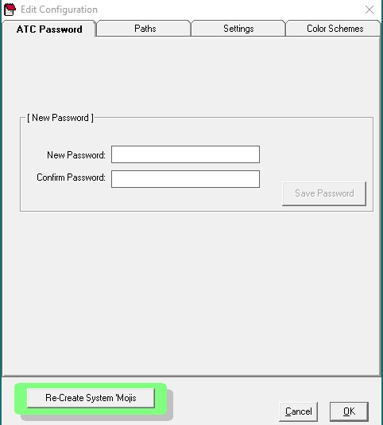

Configuration


The configuration section is where you setup the program defaults
Color Schemes
There are now eight different color schemes available in AT_Connect as of v3.20. The colors and names are self-explanatory as seen to the right here. Some of these may change in the future as I am still working on some new ones.
A program restart is required (and forced) after a color scheme change.
NOTE: As of this version 3.20, there are still some very minor anomalies with the cursor colors as you will see when you use them. I am still working on fixing these.
NOTE2: These colors are static and created during compilation of the program. There is no way to edit them or change them in any way at runtime.
Settings
Settings are as follows:
- BaudSim Value - Set the BaudSim baud rate here. A value between 0-9 can be used here... 0 is the fastest. A value of 9 looks to be approximately 300 Baud. BaudSim is enabled / disabled in each BBS record in the BBS Editor.
- Stay-Alive string - a string value that is sent to the BBS every 60 seconds to keep it from logging you off due to inactivity. Used when viewing large text files, messages or cartoons in BaudSim mode. Characters that the BBS might understand and react to (such as front slash (/) in the Express BBS message editors) are not recommended for this.
- Keypress Delay - delays your keystrokes so as not to send too many characters too quickly to the BBS you are connected to. Default value = 65ms.
- Atari Keyclick sound - causes your keystrokes to send the famous Atari 'keyclick' sound. Sound must be enabled on your PC.
- Clear screen after CONNECT - causes the terminal screen to clear (as in ? CHR$(125)) when you connect to a BBS.
- Clear Buffer after Remote disconnect - causes AT_Connect to stop printing characters to the screen and clear the incoming buffer when the BBS disconnects you even if there are still characters left in the buffer.
- ATASCII Buzzer character - causes AT_Connect to beep when the buzzer character (253) is sent from the BBS. Un-checking this flag will force AT_Connect to print the character to the screen instead of beeping.
- Enable TitleBar Messages - enables the random display of the Titlebar messages on the main screen - an original feature of AT_Telnet.
- Enable RAW BBS List edits - This flag enables the 'Edit RAW' and 'Fix List' buttons in the BBS Editor. Otherwise, both of these buttons are invisible.
- Pop-up Message on Disconnect - When the BBS disconnects you or you disconnect yourself, an optional message + beep can pop-up to potentially wake you up if your BBS session was a little too boring...
- Show BBS Editor - display the BBS editor to the right of the main AT_Connect screen to place all info about this BBS at your fingertips.
- Use Text Editor (The Box) - Enables or disables the Text Editor Window. If this checkbox is unchecked, you will never know the Text Window exists...
- Detect URLs - At_Connect can now detect URLs coming across the data stream and put them in a 'Last 5' window for easy clicking and loading with your favorite browser.
- Auto Open ATEditor - Checking this box will automatically open the ATEditor at runtime.
- Enable Scrollback buffer - enable / disable the 2K scrollback buffer for viewing what went by too fast. The buffer size can also be set here.
- Enable System Log File - When enabled AT_Connect can keep a log of your activity in a file located in the System Folder called 'AT3_Log.txt'.
- Enable Online Timer - enables a timer which starts incrementing as soon as you connect. This timer is totalized and saved in the BBS Editor for each BBS.
- Auto-Open Session Status - opens the session Status form at startup.
- 'Scroll 2 Box' clears the Box - clears the box when this command is executed and this value is checked.
- Enable Speed Check - enables monitoring the incoming character speeds in cps and calculated bps and can be viewed and toggled in 'Status' form.
- Enable 'AutoNext' dialing - toggles the AutoNext function which allows immediate connection to the next BBS in the drop-down list by hitting the <Enter> key. It is a very fast way to surf the BBSes.
- Beep on Connection - Beeps when connection to a BBS is established.
Connect and Disconnect Messages
Make them anything you like!
- Connect - this message is displayed on the terminal screen when a connection to a BBS is established... like the old modem result codes and messages. The '<cr>' modifier can be used here to process a carriage return.
- Disconnect - this message is displayed on the terminal screen when a local or remote disconnect takes place. Again '<cr>' can be used here.
NOTE: Originally, the "NO CARRIER" message was used here for nostalgic purposes even though in reality there is no modem and there is no carrier - All communication is done through Winsock. Again, make them anything you like. Sometimes, I use ON and OFF. - Titlebar - Place a user-defined titlebar message which can be the default message or part of the revolving marquee of messages. '<cr>' not used here for obvious reasons.
* CLASSIC MODE *
- Unchecking all seven of the boxes in this section will make AT_Connect look and operate like it did in the good old days...for the most part, none of the new major features in version 3 will be noticeably visible.
- All ON / OFF button - this button will toggle all of the classic checkboxes for a quick way to change the mode between ATConnect and Classic At_Telnet.
Recreate System Mojis button - This button will recreate the system Mojis (like "chx1"..2..3) in case they get deleted or messed up during editing.
Backup CFG File button - backs up the Configuration file

Paths
The following Paths (and 2 flags) are used by the system
- Capture File - this is the File that captured data from sessions will be saved to. It is an ASCII text file that gets translated by AT_Connect in the 'View Capture' function.
- Screen Dump BMP filename - default filename for all bitmap screen dumps. AT_Connect prompts you to change the filename before any screen dump to BMP operation.
- AT_Connect System Folder - Located in your documents folder, this is where ATC looks for its BBS List, Configuration file and other stuff. If you change this location, remember to move your system files from the old location to the new one.
- Screen Dump sub-directory pathname - folder where BMP screen dump files will be placed.
- Capture sub-directory pathname - folder where all captures will be placed.
- 'Moji Storage folder - folder where all 'mojis will be stored.
- Web Browser Path - You may specify a path to your preferred web browser. If no path is specified, AT_Connect will use the system configured browser anytime a web link is accessed.
- Backup Folder - This folder is where your BBS and CFG backups are stored.
Flags
- Clear screen before viewing capture file - Check this box to clear the main screen before viewing a capture file.
- Use Date / Time for screen dump filename - checking this box will force AT_Connect to create a new filename based on the date / time for each BMP screen dump in the format: yyyymmdd-hhmmss.bmp.
- Slow Display - When checked, a delay is added to the display speed for files displayed in the Capture menu.

AT Connect Password
- The AT_Connect system password is used to keep AT_Connect Macros hidden in the BBS Editor from nosy viewers - things like passwords, user names etc. This password should be set up when AT_Connect is executed for the first time.